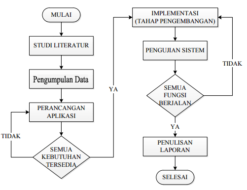

Bidang Keahlian Dosen
-
Kesehatan dan Lingkungan
- Kesehatan Lingkungan - bidang yang berfokus pada hubungan antara kondisi lingkungan dan kesehatan manusia.
- Kesehatan Masyarakat - bidang yang berfokus pada upaya menjaga dan meningkatkan kesehatan masyarakat.
-
Kesehatan dan Keperawatan
- Keperawatan - bidang yang berfokus pada pelayanan dan perawatan kesehatan pasien
- Keperawatan Lansia - bidang yang berfokus pada pelayanan kesehatan bagi kelompok lanjut usia
-
Ekonomi dan Akuntansi
- Akuntansi - bidang yang berfokus pada pencatatan, pengukuran, dan pelaporan informasi keuangan.
- Akuntansi Sektor Publik- bidang yang berfokus pada pengelolaan dan pelaporan keuangan di sektor publik.
Daftar Publikasi Penelitian
Berikut beberapa publikasi ilmiah hasil penelitian dosen Universitas Hasanuddin dari berbagai bidang keahlian.
| No. | Judul Publikasi | Penulis | Informasi Publikasi | |
|---|---|---|---|---|
| Bidang | Tahun | |||
| 1 | Ecological and human health implications of mercury contamination in the coastal water | A. Mallongi, A. U. Rauf, R. D. P. Astuti, S. Palutturi, H. Ishak | Kesehatan dan Lingkungan | 2023 |
| 2 | Investigating Fall-Related Factors in Community-Dwelling Older Women Through Structural Equation Modeling Analysis | Riskah Nur'amalia, Mayumi Kato, Masami Yokogawa, Yoshimi Taniguchi, Andi Masyitha Irwan | 2025 | |
| 3 | Global Trends in Internal Control and Public Sector Accounting Fraud Research: A Bibliometric Study | Darmawati, Elis Mediawati, Andi Ratna Sari Dewi | Ekonomi dan Akuntansi | 2025 |
| Total Publikasi yang Ditampilkan | 3 | |||
Deskripsi Riset
-
Ecological and Human Health Implications of Mercury Contamination in the Coastal Water
- Penelitian ini membahas pencemaran merkuri pada perairan pesisir serta dampaknya terhadap lingkungan & kesehatan manusia. Penelitian juga membahas penggunaan polymer sulfur sebagai bahan penyerap merkuri.
-
Investigating Fall-Related Factors in Community-Dwelling Older Women Through Structural Equation Modeling Analysis
- Penelitian ini menganalisis faktor-faktor yang berkaitan dengan risiko jatuh pada perempuan lanjut usia. Analisis menggunakan Structural Equation Modeling untuk melihat hubungan antar faktor yang diteliti – termasuk faktor yang berkaitan dengan risiko jatuh.
-
Global Trends in Internal Control and Public Sector Accounting Fraud Research: A Bibliometric Study
- Penelitian ini membahas perkembangan penelitian mengenai pengendalian internal dan fraud pada akuntansi sektor publik. Istilah "fraud" digunakan dalam pembahasan penelitian terkait kecurangan pada sektor publik.
Alur Metodologi Penelitian
